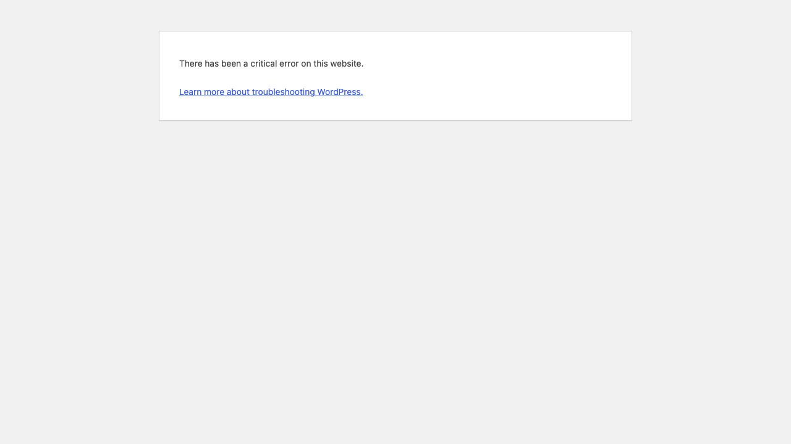
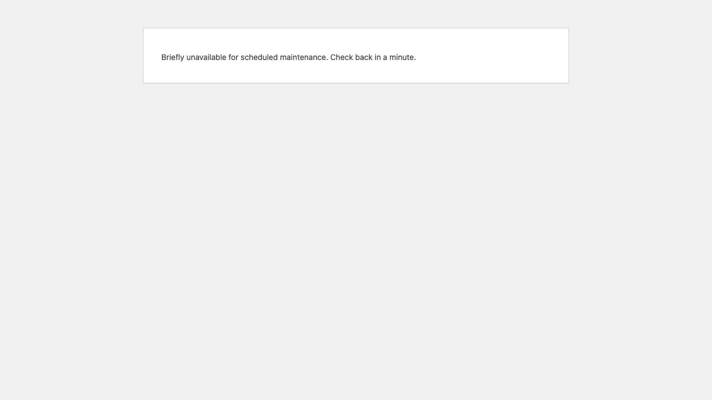
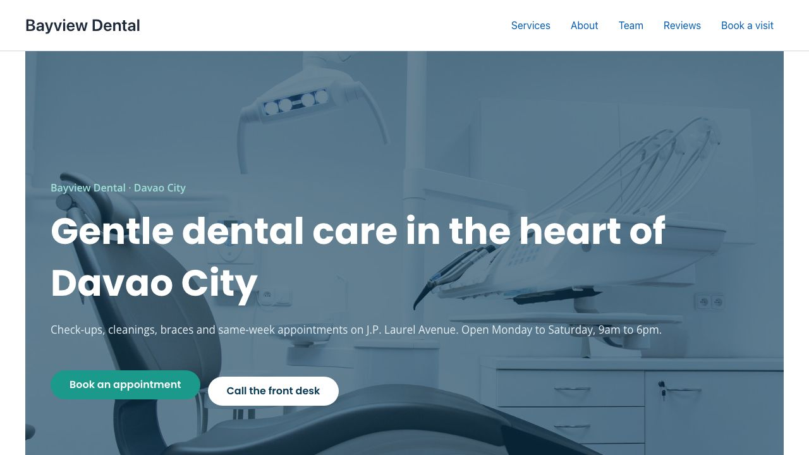
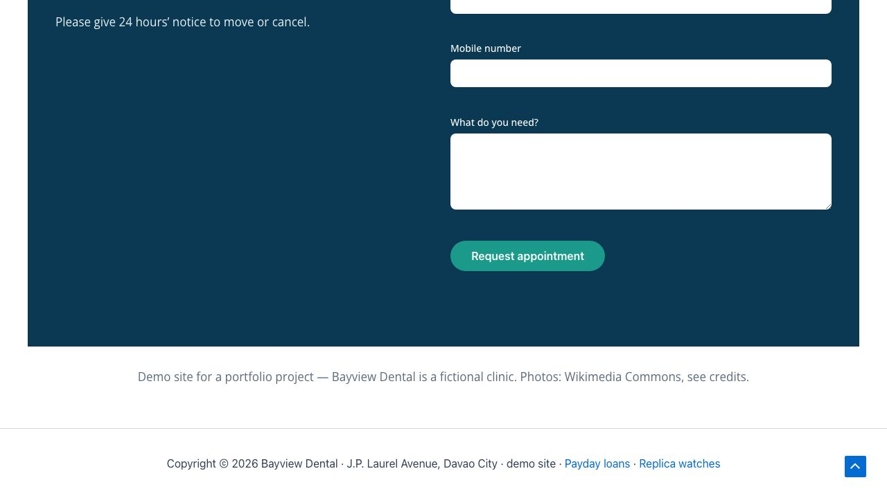
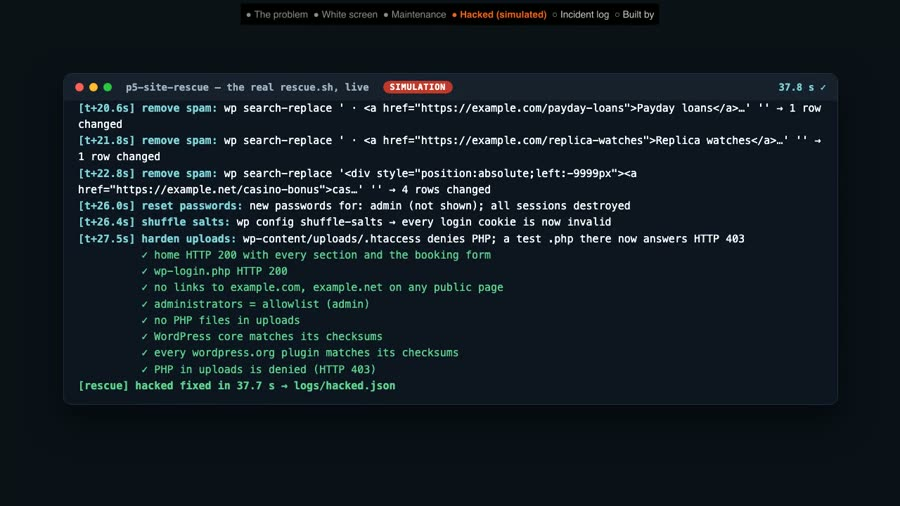
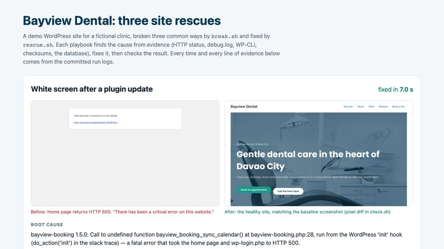

Broken WordPress site? Back online, step by step, with the evidence
If your website is down, patients can't book and you lose them to the clinic down the road. I broke a demo clinic's WordPress site in the three ways small-business sites most often break, then brought it back each time: the cause found, only that fixed, and the booking form checked before calling it done.
The three problems, in plain words
| What the owner sees | What was really wrong | What I did | Result |
|---|---|---|---|
| A blank page saying "critical error" | A plugin update was faulty | Put back the previous version | Site and bookings back in 7 s |
| "Briefly unavailable for maintenance" that never goes away | An update stopped half-way and left broken files | Cleared the stuck update, replaced the broken files | Site and bookings back in 18 s |
| Strange "payday loan" links on the site (staged, harmless test) | A fake admin, a hidden backdoor file and spam in the database | Removed all three, changed every password, locked the doors | Clean site, only the real admin can log in |
For you as the owner: the site comes back first, then the real cause is fixed, and you get a one-page report of what broke, the proof, and what I changed. Nothing else on your site is touched.
What I'd do on your real site
- Backup first: a full copy of your site, even the broken one, saved before I change anything.
- Only the access I need: my own login, never your password. Removed when we're done if you want.
- Get you back online: the quickest safe step first, so patients can book again.
- Fix the cause on a test copy: the real fix is tried on a private copy of your site, then put live.
- Check: home page, booking or contact form, login, and after a hack, the admin list and files.
- Report: what broke, the proof, what I changed, and how to stop it happening again.
Ongoing care, if you want it: a monthly routine of backups, updates tested on a copy first, and a security check, so problems are found before patients find them.
I haven't done this on a paying client's site yet; this demo is how I'd work on yours.
FAQ
My site shows "There has been a critical error on this website". Can you fix it?
That message is WordPress hiding a PHP fatal error, most often from a plugin or theme update. I read the error log to find the exact plugin and line, switch that one plugin off so the site comes back, then roll it back to the last working version or fix the conflict. In this demo that took 7.0 seconds of script time, and the booking form was checked afterwards.
Will I lose content or orders while you fix it?
I take a full backup of files and database before changing anything, and I change only what the evidence points to: one plugin, one file, the exact spam snippets. In this demo the fixed site matched a screenshot of the healthy site to 0.000% of pixels, with every section and the booking form still there.
Can you clean a hacked WordPress site?
Yes, step by step: find admins nobody created, compare WordPress and plugin files with the official wordpress.org checksums, find PHP files hidden in uploads, quarantine them, remove spam from the database, reset passwords, log everyone out, rotate the security keys and block PHP in uploads. The hack in this demo is a staged, harmless simulation. On a real site I would also ask your host for access logs to find how they got in.
What access do you need?
The least that does the job: a WordPress admin account of my own (not yours), plus SFTP or SSH from your host if the site is fully down. I remove my access when the work is done, if you want.
Is this a real client site?
No. Bayview Dental is a demo clinic I built on WordPress, and the three incidents are staged by a script on my own machine. The diagnosis, fixes and checks are real and run against that site. There is no paying client here.
The evidence, incident by incident
For anyone who wants the technical detail. Times are from the committed run logs. The script never uses the names the break script used: the plugin, files, user and spam are all found from the site's own evidence at run time.
| Incident | Symptom | Fixed in |
|---|---|---|
| White screen after a plugin update | HTTP 500, "critical error" | 7.0 s |
| Stuck in maintenance mode | HTTP 503 on every page | 17.5 s |
| Hacked site (staged simulation) | spam links, unknown admin | 23.6 s |
1. White screen after a plugin update · fixed in 7.0 s
- Symptom
- Home page and the admin login both return HTTP 500: "There has been a critical error on this website."
- Root cause found
- The error log names the plugin and the line: PHP Fatal error: Uncaught Error: Call to undefined function bayview_booking_sync_calendar() in /var/www/html/wp-content/plugins/bayview-booking/bayview-booking.php:28 The clinic's booking plugin had just been updated from 1.4.2 to 1.5.0, and 1.5.0 calls a function that doesn't exist on every page load.
- Fix
- Switched that one plugin off (site back up, but no booking box), copied 1.4.2 back from WordPress's own update backup, and switched it on again.
- Verified
- Home HTTP 200 with every section and the booking form; login page HTTP 200; no new errors in the log; booking plugin 1.4.2 active.


2. Stuck in maintenance mode · fixed in 17.5 s
- Symptom
- Every page returns HTTP 503: "Briefly unavailable for scheduled maintenance. Check back in a minute." It never comes back by itself.
- Root cause found
- An update that never finished. WordPress's
.maintenancefile was left behind. With it removed, the site showed HTTP 500 and the log said: PHP Parse error: syntax error, unexpected string content "Failed to attach a file. The t..." in /var/www/html/wp-content/plugins/contact-form-7/includes/mail.php on line 316 Comparing every plugin with the official wordpress.org checksums named exactly which files were damaged: contact-form-7 6.2.1: includes/mail.php (checksum does not match), includes/submission.php (checksum does not match); every other wordpress.org plugin matches - Fix
- Removed the leftover
.maintenancefile and reinstalled Contact Form 7 at the exact version the site was running (6.2.1), so nothing else changed. - Verified
- Home HTTP 200 with every section and the booking form; login page HTTP 200; no
.maintenancefile; every plugin matches its checksums.


3. Hacked site, a staged simulation on a demo site · cleaned in 23.6 s
Nothing real was attacked. A script planted what a compromise usually looks like: an admin nobody created, spam links, and a "backdoor" file in uploads that is inert (it reads no input and only prints a fixed message). The spam links point to example.com and example.net.
- Symptom
- Spam links on the site: in the footer of every page ("Payday loans", "Replica watches") and hidden off-screen in two news posts.
- Root cause found
- 2 administrators, allowlist has 1; not on it: wp_support_admin <wp.support@example.net> PHP files in uploads: wp-content/uploads/2026/10/wp-cache-helper.php; malware signatures (eval(base64_decode …) wp db search → 3 distinct injected snippets in wp_options.option_value#154, wp_posts.post_content#24, #25, #28, #29 WordPress core and the wordpress.org plugins matched their official checksums, and the custom plugin matched its own copy, so the only planted file was the one in uploads.
- Fix (security steps)
- Backdoor quarantined: moved outside the web root, with its SHA-256 fingerprint logged.
- Rogue admin removed:
wp_support_admindeleted, its content reassigned to the real admin (it had none). - Files checked: WordPress core and plugins against wordpress.org checksums, all matching.
- Spam removed: the exact injected snippets taken out of the database (6 rows: the footer setting, two posts and their revisions).
- Locked out: every admin password reset, every login session destroyed, and the security keys (salts) rotated so old login cookies stop working.
- PHP blocked in uploads: a rule so files there can't run. A test file now answers HTTP 403.
- Verified
- Home and login HTTP 200; no spam links on any public page; admins match the allowlist; no PHP files in uploads; core and plugin checksums pass; PHP in uploads denied (HTTP 403). The test also checks that the security keys and the admin password really changed and that no sessions are left.


How this was done. WordPress (Astra, Elementor, Contact Form 7 and the clinic's own booking plugin) ran in Docker on my own machine. A break script staged each incident from a clean snapshot; the rescue script then worked only from evidence: HTTP status, the PHP error log, WP-CLI, wordpress.org checksums and the database. An automatic check ran all three break-and-rescue cycles and failed if anything was missing afterwards, including a full-page screenshot compared with the healthy site (0.000% pixel difference every time).
About the times: "fixed in" is script time from the committed run logs. Times vary per run with how busy my machine is, and the terminal in the video shows the filmed run's own times (7.1 s, 18.0 s and 37.7 s). A real job also includes the backup, staging and your approval, which take longer than the script.
Honest note: Bayview Dental is a demo clinic, the same fictional clinic as my other case studies. The incidents are staged on a demo site; the hack is a harmless simulation. There is no paying client here.

Tools used
- WordPress with Astra, Elementor and Contact Form 7, in Docker; WP-CLI for every diagnosis and fix.
- wordpress.org checksums (
wp core verify-checksums,wp plugin verify-checksums) to prove which files were changed. - Bash rescue playbooks; Playwright and ImageMagick to screenshot and compare the site before and after.
View the code on GitHub → (break, rescue, restore and check scripts, incident logs, MIT licence)
Video transcript
Full narration of the 85-second demo video, with start times.
When a clinic's website goes down, no patient can book. Here's how I bring a broken WordPress site back.
Bayview Dental, a demo site, right after a staged plugin update. A critical error on every page.
My rescue script reads the debug log, finds the plugin that crashed, rolls it back, and checks the booking form.
The site is back, and patients can book again.
Next, an update that died half-way. The site is stuck in maintenance mode.
Checksums find the half-written plugin files, and the script reinstalls that exact version.
Third, a hacked site, staged as a safe simulation. There's an administrator nobody created.
And spam links injected into the pages and the footer.
The script quarantines the backdoor, deletes the rogue admin, strips the spam from the database, resets passwords, and blocks PHP in uploads.
Clean again.
Every rescue writes a timed log: the symptom, the root cause, each step, and what was checked.
Built by McKeen Asma, WordPress and Tech VA.
Same clinic: AI lead responder (the lead form) · clinic chat assistant (website chat and booking) · AI inbox triage (email and invoices) · WordPress speed fix (the same site, made fast)